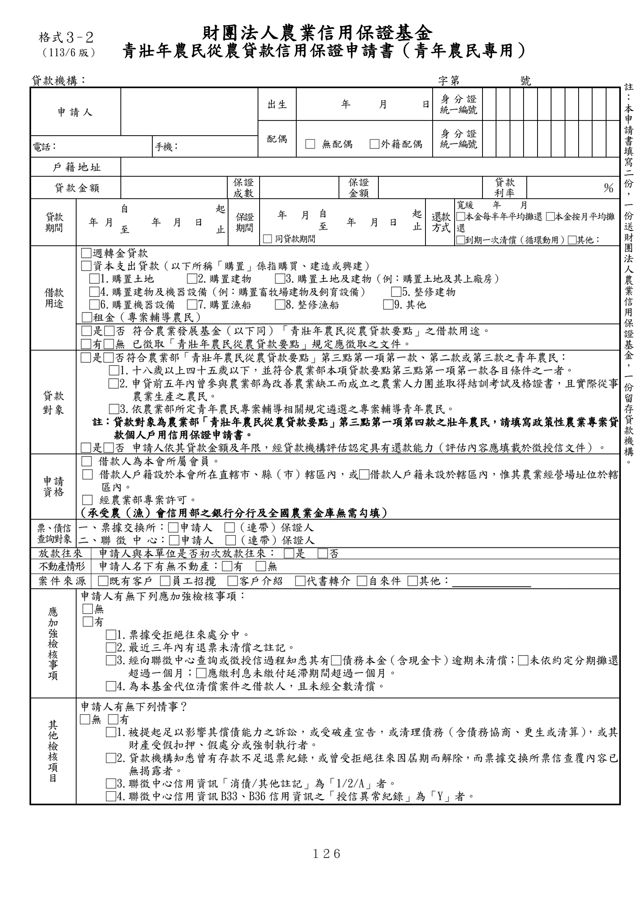
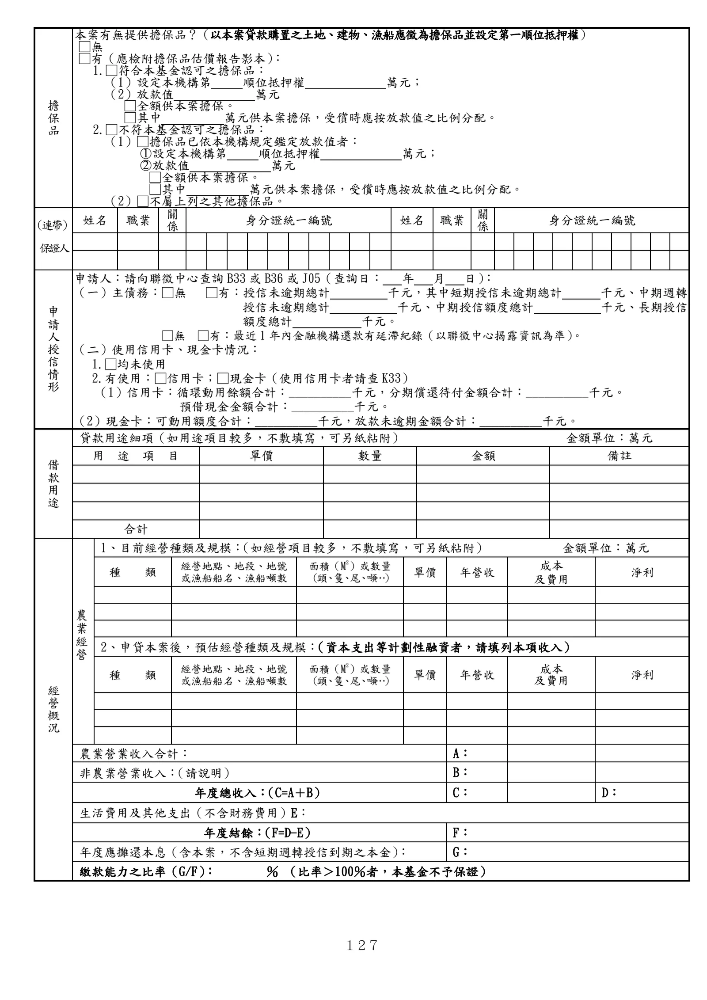
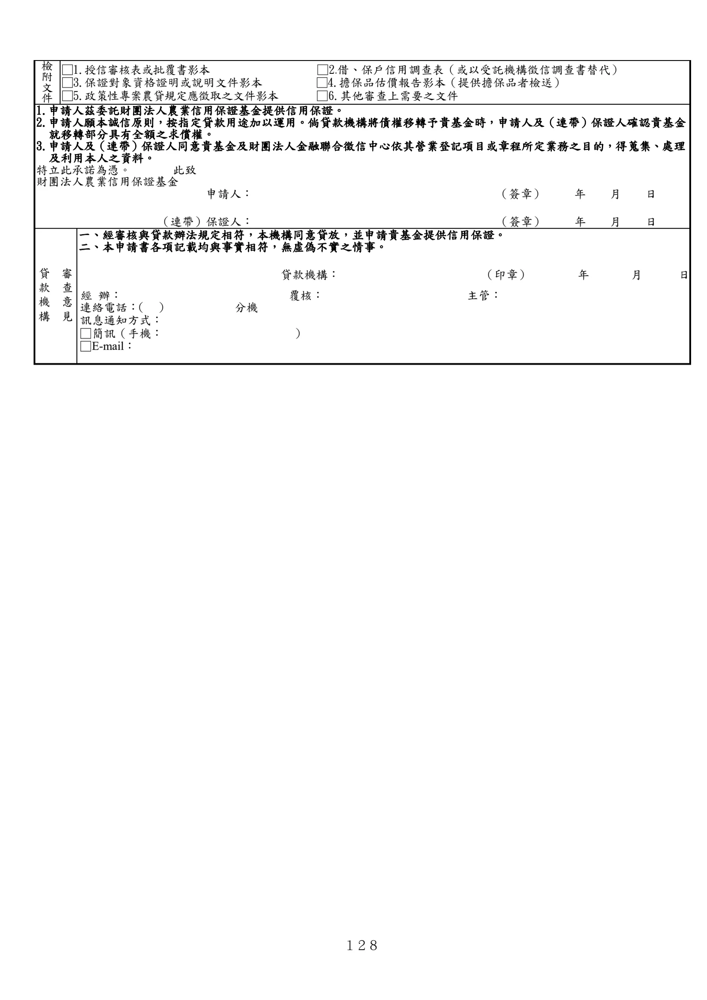

格式 3-2：青壯年農民從農貸款信用保證申請書（青年農民專用）
正式書表版面請以原始PDF為準
下列擷取文字僅供搜尋與輔助查閱，未重新設計為線上表單。
手冊頁：126 PDF頁：138／203

查看PDF文字層
下列文字取自PDF既有文字層，僅供搜尋、複製與無障礙輔助。複雜表格的欄列位置可能失真，正式內容請以原頁預覽或PDF為準。
財團法人農業信用保證基金 青壯年農民從農貸款信用保證申請書（青年農民專用） 貸款機構： 字第 號 申請人 出生 年 月 日 身 分 證 統一編號 配偶 □ 無配偶 □外籍配偶 身 分 證 統一編號 電話： 手機： 戶 籍 地 址 貸 款 金 額 保證 成數 保證 金額 貸款 利率 ％ 貸款 期間 年 月 自 至 年 月 日 起 止 保證 期間 年 月 自 至 年 月 日 起 止 還款 方式 寬緩 年 月 □本金每半年平均攤還 □本金按月平均攤 還 □到期一次清償（循環動用）□其他： □ 同貸款期間 借款 用途 □週轉金貸款 □資本支出貸款（以下所稱「購置」係指購買、建造或興建） □1.購置土地 □2.購置建物 □3.購置土地及建物（例：購置土地及其上廠房） □4.購置建物及機器設備（例：購置畜牧場建物及飼育設備） □5.整修建物 □6.購置機器設備 □7.購置漁船 □8.整修漁船 □9.其他 □租金（專案輔導農民） □是□否 符合農業發展基金（以下同）「青壯年農民從農貸款要點」之借款用途。 □有□無 已徵取「青壯年農民從農貸款要點」規定應徵取之文件。 貸款 對象 □是□否符合農業部「青壯年農民從農貸款要點」第三點第一項第一款、第二款或第三款之青年農民： □1.十八歲以上四十五歲以下，並符合農業部本項貸款要點第三點第一項第一款各目條件之一者。 □2.申貸前五年內曾參與農業部為改善農業缺工而成立之農業人力團並取得結訓考試及格證書，且實際從事 農業生產之農民。 □3.依農業部所定青年農民專案輔導相關規定遴選之專案輔導青年農民。 註：貸款對象為農業部「青壯年農民從農貸款要點」第三點第一項第四款之壯年農民，請填寫政策性農業專案貸 款個人戶用信用保證申請書。 □是□否 申請人依其貸款金額及年限，經貸款機構評估認定具有還款能力（評估內容應填載於徵授信文件）。 申請 資格 □ 借款人為本會所屬會員。 □ 借款人戶籍設於本會所在直轄市、縣（市）轄區內，或□借款人戶籍未設於轄區內，惟其農業經營場址位於轄 區內。 □ 經農業部專案許可。 （承受農（漁）會信用部之銀行分行及全國農業金庫無需勾填） 票、債信 查詢對象 一、票據交換所：□申請人 □（連帶）保證人 二、聯 徵 中 心：□申請人 □（連帶）保證人 放款往來 申請人與本單位是否初次放款往來： □是 □否 不動產情形 申請人名下有無不動產：□有 □無 案 件 來 源 □既有客戶 □員工招攬 □客戶介紹 □代書轉介 □自來件 □其他： 應 加 強 檢 核 事 項 申請人有無下列應加強檢核事項： □無 □有 □1.票據受拒絕往來處分中。 □2.最近三年內有退票未清償之註記。 □3.經向聯徵中心查詢或徵授信過程知悉其有□債務本金（含現金卡）逾期未清償；□未依約定分期攤還 超過一個月；□應繳利息未繳付延滯期間超過一個月。 □4.為本基金代位清償案件之借款人，且未經全數清償。 其 他 檢 核 項 目 申請人有無下列情事？ □無 □有 □1.被提起足以影響其償債能力之訴訟，或受破產宣告，或清理債務（含債務協商、更生或清算） ，或其 財產受假扣押、假處分或強制執行者。 □2.貸款機構知悉曾有存款不足退票紀錄，或曾受拒絕往來因屆期而解除，而票據交換所票信查覆內容已 無揭露者。 □3.聯徵中心信用資訊「消債/其他註記」為「1/2/A」者。 □4.聯徵中心信用資訊B33、B36信用資訊之「授信異常紀錄」為「Y」者。 格式３-２ （113/6版） 註 ： 本 申 請 書 填 寫 二 份 ， 一 份 送 財 團 法 人 農 業 信 用 保 證 基 金 ， 一 份 留 存 貸 款 機 構 。
手冊頁：127 PDF頁：139／203

查看PDF文字層
下列文字取自PDF既有文字層，僅供搜尋、複製與無障礙輔助。複雜表格的欄列位置可能失真，正式內容請以原頁預覽或PDF為準。
擔 保 品 本案有無提供擔保品？（以本案貸款購置之土地、建物、漁船應徵為擔保品並設定第一順位抵押權） □無 □有（應檢附擔保品估價報告影本） ： 1.□符合本基金認可之擔保品： （1）設定本機構第 順位抵押權 萬元； （2）放款值 萬元 □全額供本案擔保。 □其中 萬元供本案擔保，受償時應按放款值之比例分配。 2.□不符本基金認可之擔保品： （1）□擔保品已依本機構規定鑑定放款值者： ○1 設定本機構第 順位抵押權 萬元； ○2 放款值 萬元 □全額供本案擔保。 □其中 萬元供本案擔保，受償時應按放款值之比例分配。 （2）□不屬上列之其他擔保品。 （連帶） 保證人 姓名 職業 關 係 身分證統一編號 姓名 職業 關 係 身分證統一編號 申 請 人 授 信 情 形 申請人：請向聯徵中心查詢B33或 B36或 J05（查詢日： 年 月 日） ： （一）主債務：□無 □有：授信未逾期總計 千元，其中短期授信未逾期總計 千元、中期週轉 授信未逾期總計 千元、中期授信額度總計 千元、長期授信 額度總計 千元。 □無 □有：最近 1年內金融機構還款有延滯紀錄（以聯徵中心揭露資訊為準）。 （二）使用信用卡、現金卡情況： 1.□均未使用 2.有使用：□信用卡；□現金卡（使用信用卡者請查K33） （1）信用卡：循環動用餘額合計：__________千元，分期償還待付金額合計：__________千元。 預借現金金額合計：__________千元。 （2）現金卡：可動用額度合計：__________千元，放款未逾期金額合計：__________千元。 借 款 用 途 貸款用途細項（如用途項目較多，不敷填寫，可另紙粘附） 金額單位：萬元 用 途 項 目 單價 數量 金額 備註 合計 經 營 概 況 農 業 經 營 1、目前經營種類及規模： （如經營項目較多，不敷填寫，可另紙粘附） 金額單位：萬元 種 類 經營地點、地段、地號 或漁船船名、漁船噸數 面積（M 2 ）或數量 （頭、隻、尾、噸…） 單價 年營收 成本 及費用 淨利 2、申貸本案後，預估經營種類及規模：（資本支出等計劃性融資者，請填列本項收入） 種 類 經營地點、地段、地號 或漁船船名、漁船噸數 面積（M 2 ）或數量 （頭、隻、尾、噸…） 單價 年營收 成本 及費用 淨利 農業營業收入合計： A： 非農業營業收入： （請說明） B： 年度總收入： （C=A＋B） C： D： 生活費用及其他支出（不含財務費用）E： 年度結餘： （F=D-E） F： 年度應攤還本息（含本案，不含短期週轉授信到期之本金）： G： 繳款能力之比率（G/F）： ％ （比率＞100％者，本基金不予保證）
手冊頁：128 PDF頁：140／203

查看PDF文字層
下列文字取自PDF既有文字層，僅供搜尋、複製與無障礙輔助。複雜表格的欄列位置可能失真，正式內容請以原頁預覽或PDF為準。
檢 附 文 件 □1.授信審核表或批覆書影本 □2.借、保戶信用調查表（或以受託機構徵信調查書替代） □3.保證對象資格證明或說明文件影本 □4.擔保品估價報告影本（提供擔保品者檢送） □5.政策性專案農貸規定應徵取之文件影本 □6.其他審查上需要之文件 1.申請人茲委託財團法人農業信用保證基金提供信用保證。 2.申請人願本誠信原則，按指定貸款用途加以運用。倘貸款機構將債權移轉予貴基金時，申請人及（連帶）保證人確認貴基金 就移轉部分具有全額之求償權。 3.申請人及（連帶）保證人同意貴基金及財團法人金融聯合徵信中心依其營業登記項目或章程所定業務之目的，得蒐集、處理 及利用本人之資料。 特立此承諾為憑。 此致 財團法人農業信用保證基金 申請人： （簽章） 年 月 日 （連帶）保證人： （簽章） 年 月 日 審 查 意 見 貸 款 機 構 一、經審核與貸款辦法規定相符，本機構同意貸放，並申請貴基金提供信用保證。 二、本申請書各項記載均與事實相符，無虛偽不實之情事。 貸款機構： （印章） 年 月 日 經 辦： 覆核： 主管： 連絡電話： （ ） 分機 訊息通知方式： □簡訊（手機： ） □E-mail：